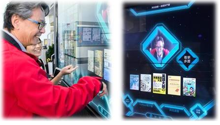

第一ステーション：知書ネット・電子書籍ウォール - テキストガイド
このAI電子書籍ウォールは、電子書籍の読書を推進するために、2018年12月に設置された革新的な設備です。単なる書籍の壁ではなく、まるで熱意ある読書ガイドのように、新しいテクノロジーを取り入れた3つの主要機能を備えています：テーマ別電子書籍の紹介、QRコードによるダウンロード、そして顔認識による楽しい書籍推薦です。
訪問者は、自分の読書の興味に合わせて、タッチスクリーンの書籍リストを選んで閲覧したり、QRコードをスキャンしてすぐに電子書籍を借りて読むことができます。
中でも最も注目を集めているのは「写真で本を推薦する」機能です。顔認識技術を用いて、読者一人ひとりに合わせた書籍を推薦します。2018年の設置当日には、当時の学長・呉志揚氏がこの機能を体験し、自ら『人生は物語のようなもの』という本を冬休みの読書リストとして選びました。これをきっかけに、図書館では「一人一冊で過ごす冬休み」読書キャンペーンが始まりました。
2019年の校慶では、徐旭東理事長が来賓とともにこの場を訪れ、写真推薦機能を体験しました。それ以来、この電子書籍ウォールは単なるデジタル読書の入口に留まらず、学生や来館者が記念撮影する人気スポットにもなっています。
それはただの壁ではなく、知識と心をつなぐ架け橋なのです。